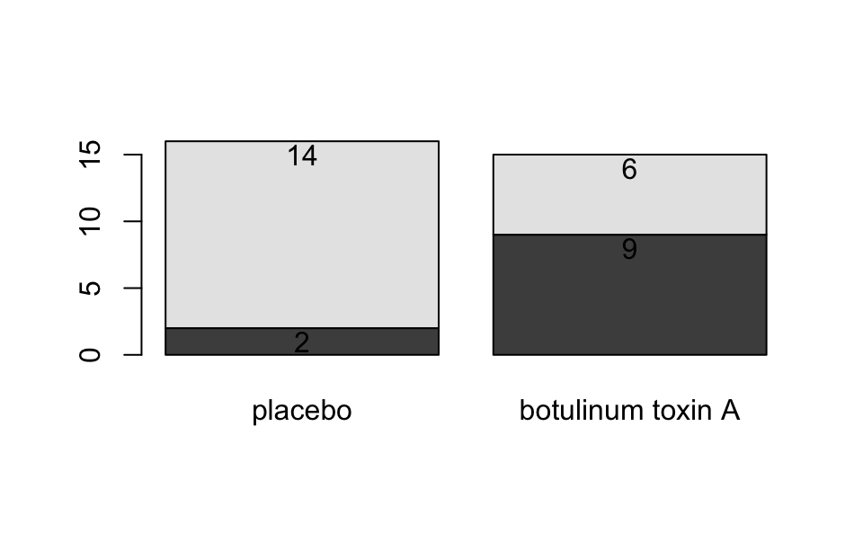

Chapter 4 Analysis of Categorical Data (section 6.3)
4.1 Categorical Inference
In either an observational study or a randomized experiment, we are often interested in assessing the statistical significance of the differences we see: Is the observed difference too big to have reasonably occurred just due to chance? To answer the question, we will use
- simulation
- mathematical probability models.
- Is this an experiment or an observational study?
- Explain the importance of using the “placebo” treatment of saline.
- Create the two-way table for summarizing the data, putting the explanatory variable as the columns and the response as rows.
- Calculate the conditional proportions of pain reduction in the two groups. Display the results as a segmented bar graph. Comment on the preliminary analysis.
| placebo | Botox | ||
|---|---|---|---|
| pain reduction | 2 | 9 | 11 |
| no pain reduction | 14 | 6 | 20 |
| 16 | 15 | 31 |
backpain <- matrix(c(2,14,9,6),ncol=2,byrow=F)
backpain## [,1] [,2]
## [1,] 2 9
## [2,] 14 6backpain.bp <- barplot(backpain, plot=FALSE)
barplot(backpain, names.arg=c("placebo","botulinum toxin A"))
text(backpain.bp, c(backpain[1,]-1,backpain[2,]+backpain[1,]-1),t(backpain))
If there was no association between the treatment and the back pain relief, about how many of the 11 “successes” would you expect to see in each group? Did the researchers observe more successes in the saline group than expected (if the drug had no effect) or fewer successes than expected? Is this in the direction conjectured by the researchers?
Is is possible that the drug has absolutely no effect on back pain? That the differences were simply due to chance or random variability? How likely is that?
Simulation
- 11 red “success” cards (pain reduction); 20 black “failure” cards (no pain reduction)
- randomly deal out (i.e. shuffle) 15 cards to the treatment group and 16 cards to the placebo group.
count how many people in the treatment group were successes? Repeat 5 times.
- process
- what do the cards represent?
- what does shuffling the cards represent?
- what implicit assumption about the two groups did the shuffling of cards represent?
- what observational units would be represented by the dots on the dotplot?
- why would we count the number of repetitions with 9 or more “successes”?
Repeat simulation using the two-way table applet: http://www.rossmanchance.com/applets/TwowaySim/TwowaySim.html
- summary
- How many reps?
- How many as extreme as the true data?
- What proportion are at least as extreme as the true data?
- Do our data support the researchers conjecture?
- What if the actual data had been 7 successes in the treatment group (and 4 in the placebo group)?
Notice that regardless of whether or not the drug has an effect, the data will be different each time (think: new 31 people). The small p-value allows us to draw cause-and-effect conclusions, but doesn’t necessarily allow us to infer to a larger population. Why not?
| low cutoff | p-value | high cutoff | evidence |
|---|---|---|---|
| p-value \(\leq\) | 0.001 | very strong evidence | |
| 0.001 | \(<\) p-value \(\leq\) | 0.01 | strong evidence |
| 0.01 | \(<\) p-value \(\leq\) | 0.05 | moderate evidence |
| 0.05 | \(<\) p-value \(\leq\) | 0.10 | weak but suggestive evidence |
| 0.10 | \(<\) p-value | little or no evidence |
4.2 Fisher’s Exact Test (section 6.4)
Because we have a fixed sample, we can’t use the Binomial distribution to figure out associated probabilities. Instead, we use the hypergeometric distribution to enumerate the possible ways of choosing our data or more extreme given fixed row and column totals.
| placebo | Botox | ||
|---|---|---|---|
| pain reduction | 2 = x | 9 | 11 = n |
| no pain reduction | 14 | 6 | 20 |
| 16 = M | 15 = N - M | 31 = N |
To make it simpler, let’s say I have 5 items (N=5), and I want to choose 3 of them (n=3). How many ways can I do that?
SSSNN, SSNSN, SSNNS, SNSSN, SNSNS, SNNSS, NSSSN, NSSNS, NSNSS, NNSSS [5!/ 3! 2!]
(S = select, N = not selected)So, how many different ways can I select 11 people (out of 31) to be my “pain reduction” group? That is the total number of different groups of size 11 from 31. But really, we want our groups to be of a certain breakdown. We need 2 (of 16) to have gotten the placebo and 9 (of 15) to have gotten the Botox treatment.
Find the P(X=2)
We can now find EXACT probabilities associated with the following hypotheses. \[\begin{eqnarray*} &&H_0: \pi_{pl} = \pi_{Btx}\\ &&H_a: \pi_{pl} < \pi_{Btx}\\ &&\pi = \mbox{true probability of no pain}\\ \end{eqnarray*}\]Is this a one- or two-sided test? Why? [Note: the assumptions here are that the row and column totals are fixed – a conditional test of independence. However, the research project in the back of chapter 6 extends the permutation test to demonstrated that the probabilities hold even under alternative technical conditions.
Note also that we get an exact probability with no assumptions about sample size (we can use Fisher’s Exact Test even when true probabilities are close to 0 or 1.]
4.3 Testing independence of two categorical variables (sections 6.5, 6.6, 6.7)
4.3.1 \(\chi^2\) tests (section 6.6)
2x2… but also rxc (\(\pi_a = \pi_b = \pi_c\))
We can also use \(\chi^2\) tests to evaluate \(r \times c\) contingency tables. Our main question now will be whether there is an association between two categorical variables of interest. Note that we are now generalizing what we did with the Botox and back pain example. Are the two variables independent? If the two variables are independent, then the state of one variable is not related to the probability of the different outcomes of the other variable.
If the data were sampled in such a way that we have random samples of both the explanatory and response variables (e.g., cross classification study), then we typically do a test of association:
\[\begin{eqnarray*} H_0: && \mbox{ the two variables are independent}\\ H_a: && \mbox{ the two variables are not independent} \end{eqnarray*}\]If the data are sampled in such a way that the response is measured across specified populations (as in the example below), we typically do a test of homogeneity of proportions. For example,
\[\begin{eqnarray*} H_0: && \pi_1 = \pi_2 = \pi_3\\ H_a: && \mbox{not } H_0 \end{eqnarray*}\]where \(\pi=P(\mbox{success})\) for each of groups 1,2,3.
How do we get expected frequencies? The same mathematics hold regardless of the type of test (i.e., sampling mechanism used to collect the data). If, in fact,the variables are independent, then we should be able to multiply their probabilities. If the probabilities are the same, we expect the overall proportion of each response variable to be the same as the proportion of the response variable in each explanatory group. And the math in the example below follows directly.
| Location | |||||
|---|---|---|---|---|---|
| (Florida) | (Iowa) | (Missouri) | Total | ||
| A | 122 | 1781 | 353 | 2256 | |
| Blood | B | 117 | 1351 | 269 | 1737 |
| Type | AB | 19 | 289 | 60 | 368 |
| O | 244 | 3301 | 713 | 4258 | |
| Total | 502 | 6722 | 1395 | 8619 |
4.3.1.1 Test of Homogeneity of Proportions (equivalent mathematically to independence)
If there is no difference in blood type proportions across the groups, then:
\[\begin{eqnarray*} P(AB | FL) = P(AB | IA) = P(AB | MO) = P(AB) \end{eqnarray*}\]We will use \(\hat{P}(AB) = \frac{368}{8619}\) as baseline for expectation (under \(H_0\)) for all the groups. That is, we would expect,
\[\begin{eqnarray*} \# \mbox{expected for AB blood and Iowa} &=& \frac{368}{8619} \cdot 6722\\ \end{eqnarray*}\]4.3.1.2 Test of Independence (equivalent mathematically to homogeneity of proporitions)
\[\begin{eqnarray*} P(cond1 \mbox{ & } cond2 ) &=& P(cond1) P(cond2) \mbox{ if variables 1 and 2 are independent}\\ P(AB \mbox{ blood & Iowa}) &=& P(AB \mbox{ blood}) P(\mbox{Iowa}) \\ &=& \bigg( \frac{368}{8619}\bigg) \bigg( \frac{6722}{8619} \bigg)\\ &=& 0.0333\\ \# \mbox{expected for AB blood and Iowa} &=& 0.033 \cdot 8619\\ &=& \frac{368 \cdot 6722}{8619}\\ E_{i,j} &=& \frac{(i \mbox{ row total})(j \mbox{ col total})}{\mbox{grand total}}\\ \end{eqnarray*}\]And the expected values under the null hypothesis…
| Location | |||||
|---|---|---|---|---|---|
| (Florida) | (Iowa) | (Missouri) | Total | ||
| A | 131.4 | 1759.47 | 365.14 | 2256 | |
| Blood | B | 101.17 | 1354.69 | 281.14 | 1737 |
| Type | AB | 21.43 | 287.00 | 59.56 | 368 |
| O | 248.00 | 3320.83 | 689.16 | 4258 | |
| Total | 502 | 6722 | 1395 | 8619 |
We cannot reject the null hypothesis. Again, we have no evidence against the null hypothesis that blood types are independently distributed in the various regions.
How do we know if our test statistic is a big number or not? Well, it turns out that the test statistic (\(X^2\)) will have an approximate \(\chi^2\) distribution with degrees of freedom = \((r- 1)\cdot (c-1)\). As long as:
- We have a random sample from the population.
- We expect at least 1 observation in every cell (\(E_i \geq 1 \forall i\))
- We expect at least 5 observations in 80% of the cells (\(E_i \geq 5\) for 80% of \(i\))
When there are only two populations, the \(\chi^2\) procedure is equivalent to the two-sided z-test for proportions. The chi-squared test statistic is the square of the z-test statistic. That is, the chi-squared test is exactly the same as the two-sided alternative for the z-test.
use chi-square if you have multiple populations
use z-test if you want one-sided tests or confidence intervals.
4.4 Parameter Estimation (section 6.8)
- Categorical - each unit is assigned to a category
- Quantitative - each observational unit is assigned a numerical value
- (Binary - a special case of categorical with 2 categories, e.g. male/female)
Table 6.6 on page 193 of the textbook is excellent and worth looking at.Example 4.3 Popcorn & Lung Disease Chance and Rossman (2018)
How can we tell if popcorn production is related to lung disease? Consider High / Low exposure:| low exposure | high exposure | ||
|---|---|---|---|
| Airway obstructed | 6 | 15 | 21 |
| Airway not obstructed | 52 | 43 | 95 |
| 58 | 58 | 116 |
Is 21 a lot of people? Can we compare 6 vs. 15? What should we look at? proportions (always a number between 0 and 1). Look at your data (graphically and numerically). Segmented bar graph (mosaic plot):
Is there a difference in the two groups? Look at the difference in proportions or risk:
\[\begin{eqnarray*} 6/58 = 0.103 & 15/58=0.2586 & \Delta = 0.156\\ p_1 = 0.65 & p_2 = 0.494 & \Delta = 0.156\\ p_1 = 0.001 & p_2 = 0.157 & \Delta = 0.156\\ \end{eqnarray*}\]It turns out that the sampling distribution of the difference in the sample proportions (of success) across two independent groups can be modeled by the normal distribution if we have reasonably large sample sizes (CLT).
To ensure the accuracy of the test, check whether np and n(1-p) is bigger than 5 in both samples is usually adequate. A more precise check is \(n_s \hat{p}_c\) and \(n_s(1-\hat{p}_c)\) are both greater than 5; \(n_s\) is the smaller of the two sample sizes and \(\hat{p}_c\)is the sample proportion when the two samples are combined into one.
Note: \[\begin{eqnarray*} \hat{p}_1 - \hat{p}_2 \sim N\Bigg(\pi_1 - \pi_2, \sqrt{\frac{\pi_1(1-\pi_1)}{n_1} + \frac{\pi_2(1-\pi_2)}{n_2}}\Bigg) \end{eqnarray*}\] When testing independence, we assume that \(\pi_1=\pi_2\), so we use the pooled estimate of the proportion to calculate the SE: \[\begin{eqnarray*} SE(\hat{p}_1 - \hat{p}_2) = \sqrt{ \hat{p}_c(1-\hat{p}_c) \bigg(\frac{1}{n_1} + \frac{1}{n_2}\bigg)} \end{eqnarray*}\] So, when testing, the appropriate test statistic is: \[\begin{eqnarray*} Z = \frac{\hat{p}_1 - \hat{p}_2 - 0}{ \sqrt{ \hat{p}_c(1-\hat{p}_c) (\frac{1}{n_1} + \frac{1}{n_2})}} \end{eqnarray*}\]4.4.1 CI for differences in proportions
We can’t pool our estimate for the SE, but everything else stays the same…
\[\begin{eqnarray*} SE(\hat{p}_1 - \hat{p}_2) = \sqrt{\frac{\hat{p}_1(1-\hat{p}_1)}{n_1} + \frac{\hat{p}_2(1-\hat{p}_2)}{n_2}} \end{eqnarray*}\]The main idea here is to determine whether two categorical variables are independent. That is, does knowledge of the value of one variable tell me something about the probability of the other variable (gender and pregnancy). We’re going to talk about two different ways to approach this problem.
4.4.2 Relative Risk
\(\hat{RR}\) in the popcorn example is \(\frac{15/58}{6/58} = 2.5\). We say, “The risk of airway obstruction is 2.5 times higher for those in high exposure group compared to those in the low exposure group.” What about
- sample size?
- baseline risk?
To create confidence intervals for relative risk, we use the fact that:
\[\begin{eqnarray*} SE(\ln (\hat{RR})) &\approx& \sqrt{\frac{(1 - \hat{p}_1)}{n_1 \hat{p}_1} + \frac{(1-\hat{p}_2)}{n_2 \hat{p}_2}} \end{eqnarray*}\]4.4.3 Odds Ratios
A related concept to risk is odds. It is often used in horse racing, where “success” is typically defined as losing. So, if the odds are 3 to 1 we would expect to lose 3/4 of the time.
\(\hat{OR}\) in the popcorn example is \(\frac{15/43}{6/52} = 3.02\). We say, “The odds of airway obstruction are 3 times higher for those in the high exposure group compared to those in the low exposure group.”
4.4.3.1 OR is more extreme than RR
Without loss of generality, assume the true \(RR > 1\), implying \(\pi_1 / \pi_2 > 1\) and \(\pi_1 > \pi_2\).
Note the following sequence of consequences:
\[\begin{eqnarray*} RR = \frac{\pi_1}{\pi_2} &>& 1\\ \frac{1 - \pi_1}{1 - \pi_2} &<& 1\\ \frac{ 1 / (1 - \pi_1)}{1 / (1 - \pi_2)} &>& 1\\ \frac{\pi_1}{\pi_2} \cdot \frac{ 1 / (1 - \pi_1)}{1 / (1 - \pi_2)} &>& \frac{\pi_1}{\pi_2}\\ OR &>& RR \end{eqnarray*}\]4.4.3.2 Other considerations:
- Observational study (who worked in each place?)
- Cross sectional (only one point in time)
- Healthy worker effect (who stayed home sick?)
- Explanatory variable is one that is a potential explanation for any changes (here exposure level).
- Response variable is the measured outcome of interest (here airway obstruction).
Example 4.4 Smoking & Lung Cancer Chance and Rossman (2018)
After World War II, evidence began mounting that there was a link between cigarette smoking and pulmonary carcinoma (lung cancer). In the 1950s, two now classic articles were published on the subject. One of these studies was conducted in the United States by Wynder and Graham (1950). They found records from a large number (684) of patients with proven bronchiogenic carcinoma (a specific form of lung cancer) in hospitals in California, Colorado, Missouri, New Jersey, New York, Ohio, Pennsylvania, and Utah. They personally interviewed 634 of the subjects to identify their smoking habits, occupation, exposure to dust and fumes, alcohol intake, education, and cause of death of parents and siblings. Thirty-three subjects completed mailed questionnaires, and information for the other 17 was obtained from family members or close acquaintances. Of those in the study, the researchers focused on 605 male patients with the same form of lung cancer. Another 1332 hospital patients with similar age and economic distribution (including 780 males) without lung cancer were interviewed by these researchers in St. Louis and by other researchers in Boston, Cleveland, and Hines, Illinois.
The following two-way table replicates the counts for the 605 male patients with the same form of cancer and for the “control-group” of 780 males.| none | light | mod heavy | heavy | excessive | chain | |
|---|---|---|---|---|---|---|
| \(<\) 1/day | 1-9/day | 10-15/day | 16-20/day | 21-34/day | 35\(+\)/day | |
| patients | 8 | 14 | 61 | 213 | 187 | 122 |
| controls | 114 | 90 | 148 | 278 | 90 | 60 |
Given the results of the study, do you think we can generalize from the sample to the population? Explain and make it clear that you know the difference between a sample and a population.
- Causation?
- Case-control study (605 with lung cancer, 780 without… baseline rate?)
| Group A | Group B |
|---|---|
| expl = smoking status | expl = lung cancer |
| resp = lung cancer | resp = smoking status |
- If lung cancer is considered a success and no smoking is baseline:
The risk of lung cancer is 10.22 times higher for those who smoke than for those who don’t smoke.
The odds of lung cancer is 28.9 times higher for those who smoke than for those who don’t smoke.
- If chain smoking is considered a success and healthy is baseline:
The risk of smoking is 2.7 times higher for those who have lung cancer than for those who don’t have lung cancer.
The odds of smoking is 28.9 times higher for those who have lung cancer than for those who don’t have lung cancer.
We know the risk of being a light smoker if you have lung cancer but we do not know the risk of lung cancer if you are a light smoker. Let’s say we have a population of 1,000,000 people:
| light smoking | no smoking | ||
|---|---|---|---|
| cancer | 49,000 | 1,000 | 50,000 |
| healthy | 51,000 | 899,000 | 950,000 |
| 100,000 | 900,000 | 1,000,000 |
- What is the explanatory variable?
- What is the response variable?
- relative risk?
- odds ratio?
| Group A | Group B |
|---|---|
| expl = smoking status | expl = lung cancer |
| resp = lung cancer | resp = smoking status |
- If lung cancer is considered a success and no smoking is baseline:
- If light smoking is considered a success and healthy is baseline:
OR is the same no matter which variable you choose as explanatory versus response! Though, in general, we still prefer to know baseline odds or baseline risk (which we can’t know with a case-control study).
4.4.4 Confidence Interval for OR
Due to some theory that we won’t cover:
\[\begin{eqnarray*} SE(\ln (\hat{OR})) &\approx& \sqrt{\frac{1}{n_1 \hat{p}_1 (1-\hat{p}_1)} + \frac{1}{n_2 \hat{p}_2 (1-\hat{p}_2)}} \end{eqnarray*}\]Note that your book introduces \(SE(\ln(\hat{OR}))\) in the context of hypothesis testing where the null, \(H_0: \pi_1 = \pi_2\), is assumed to be true. If the null is true, you’d prefer an estimate for the proportion of success to be based on the entire sample:
\[\begin{eqnarray*} SE(\ln (\hat{OR})) &\approx& \sqrt{\frac{1}{n_1 \hat{p} (1-\hat{p})} + \frac{1}{n_2 \hat{p}(1-\hat{p})}} \end{eqnarray*}\] So, a \((1-\alpha)100\%\) CI for the \(\ln(OR)\) is: \[\begin{eqnarray*} \ln(\hat{OR}) \pm z_{1-\alpha/2} SE(\ln(\hat{OR})) \end{eqnarray*}\] Which gives a \((1-\alpha)100\%\) CI for the \(OR\): \[\begin{eqnarray*} (e^{\ln(OR) - z_{1-\alpha/2} SE(\ln(OR))}, e^{\ln(OR) + z_{1-\alpha/2} SE(\ln(OR))}) \end{eqnarray*}\] Back to the example… OR = 28.9. \[\begin{eqnarray*} SE(\ln(\hat{OR})) &=& \sqrt{\frac{1}{182*0.67*(1-0.67)} + \frac{1}{122*0.0656*(1-0.0656)}}\\ &=& 0.398\\ 90\% \mbox{ CI for } \ln(OR) && \ln(28.9) \pm 1.645 \cdot 0.398\\ && 3.366 \pm 1.645 \cdot 0.398\\ && (2.71, 4.02)\\ 90\% \mbox{ CI for } OR && (e^{2.71}, e^{4.02})\\ && (15.04, 55.47)\\ \end{eqnarray*}\]We are 90% confident that the true \(\ln(OR)\) is between 2.71 and 4.02. We are 90% confident that the true \(OR\) is between 15.04 and 55.47. That is, the true odds of getting lung cancer if you smoke are somewhere between 15.04 and 55.47 times higher than if you don’t smoke, with 90% confidence.
Note 1: we use the theory which allows us to understand the sampling distribution for the \(\ln(\hat{OR}).\) We use the process for creating CIs to transform back to \(OR\).
Note 2: We do not use the t-distribution here because we are not estimating the population standard deviation.
Note 3: There are not good general guidelines for checking whether the sample sizes are large enough for the normal approximation. Most authorities agree that one can get away with smaller sample sizes here than for the differences of two proportions. If the sample sizes pass the rough check discussed for \(\chi^2\), they should be large enough to support inferences based on the approximate normality of the log of the estimated odds ratio, too. (Ramsey and Schafer 2012, 541)
For the normal approximation to hold, we need the expected counts in each cell to be at least 5. (Pagano and Gauvreau 2000, 355)
Note 4: If any of the cells are zero, many people will add 0.5 to that cell’s observed value.
Note 5: The OR will always be more extreme than the RR (one more reason to be careful…)
\[\begin{eqnarray*} \mbox{assume } && \frac{X_1 / n_1}{X_2 / n_2} = RR > 1\\ & & \\ \frac{X_1}{n_1} &=& RR \ \ \frac{X_2}{n_2}\\ \frac{X_1}{n_1 - X_1} &=& RR \ \ \bigg( \frac{n_1}{n_2} \frac{n_2 - X_2}{n_1 - X_1} \bigg) \frac{X_2}{n_2-X_2}\\ OR &=& RR \ \ \bigg(\frac{n_1}{n_2} \bigg) \frac{n_2 - X_2}{n_1 - X_1}\\ &=& RR \ \ \bigg(\frac{1/n_2}{1/n_1} \bigg) \frac{n_2 - X_2}{n_1 - X_1}\\ &=& RR \ \ \frac{1 - X_2/n_2}{1 - X_1/n_1}\\ & > & RR \end{eqnarray*}\][\(1 - \frac{X_2}{n_2} > 1 - \frac{X_1}{n_1} \rightarrow \frac{1 - \frac{X_2}{n_2}}{1 - \frac{X_1}{n_1}} > 1\)]
Note 6: \(RR \approx OR\) if RR is very small (the denominator of the OR will be very similar to the denominator of the RR).
4.5 Types of Studies (section 6.9)
4.5.1 Retrospective versus Prospective Studies
After much research (and asking many people who do not all agree!), I finally came across a definition of retrospective that I like. Note, however, that many many books define retrospective as synonymous with case-control. That is, they define a retrospective study to be one in which the observational units were chosen based on their status of the response variable. I disagree with that definition. As you see below, retrospective studies are defined based on the when the variables were measured. I’ve also given a quote from the Kuiper text where retrospective is defined as any study where historic data are collected (I like this definition less).
Studies can be classified further as either prospective or retrospective. We define a prospective study as one in which exposure and covariate measurements are made before the cases of illness occur. In a retrospective study these measurements are made after the cases have already occurred… Early writers referred to cohort studies as prospective studies and to case-control studies as retrospective studies because cohort studies usually begin with identification of the exposure status and then measure disease occurrence, whereas case-control studies usually begin by identifying cases and controls and then measure exposure status. The terms prospective and retrospective, however, are more usefully employed to describe the timing of disease occurrence with respect to exposure measurement. For example, case-control studies can be either prospective or retrospective. A prospective case-control study uses exposure measurements taken before disease, whereas a retrospective case-control study uses measurements taken after disease. (Rothman and Greenland 1998, 74)
Retrospective cohort studies also exist. In these designs past (medical) records are often used to collect data. As with prospective cohort studies, the objective is still to first establish groups based on an explanatory variable. However since these are past records the response variable can be collected at the same time. (Kuiper and Sklar 2013, chap. 6, page 24)
Understanding if a study is retrospective or prospective leads to having a sense of the biases within a study.
- The retrospective aspect may introduce selection bias and misclassification or information bias. With retrospective studies, the temporal relationship is frequently difficult to assess.
Disadvantages of Prospective Cohort Studies
- You may have to follow large numbers of subjects for a long time.
- They can be very expensive and time consuming.
- They are not good for rare diseases.
- They are not good for diseases with a long latency.
- Differential loss to follow up can introduce bias.
Disadvantages of Retrospective Cohort Studies
- As with prospective cohort studies, they are not good for very rare diseases.
- If one uses records that were not designed for the study, the available data may be of poor quality.
- There is frequently an absence of data on potential confounding factors if the data was recorded in the past.
- It may be difficult to identify an appropriate exposed cohort and an appropriate comparison group.
- Differential losses to follow up can also bias retrospective cohort studies.
Disadvantages from: http://sphweb.bumc.bu.edu/otlt/MPH-Modules/EP/EP713_CohortStudies/EP713_CohortStudies5.html
Examples of studies:
- cross-classification, prospective: NHANES
- cross-classification, retrospective: death records (if exposure is measured post-hoc)
- case-control, prospective: the investigator still enrolls based on outcome status, but the investigator must wait to the cases to occur
- case-control, retrospective: at the start of the study, all cases have already occurred and the investigator goes back to measure the exposure (explanatory) variable
- cohort, retrospective: the exposure and outcomes have already happened (i.e., death records)
- cohort, prospective: follows the selected participants to assess the proportion who develop the disease of interest
Which test? (section 6.1)
It turns out that the tests above (independence, homogeneity of proportions, homogeneity of odds) are typically equivalent with respect to their conclusions. However, they each have particular assumptions about what they are testing, but that we can generally use any of them for our hypotheses of interest. However, we need to be very careful about our interpretations!
(no goodness of fit, section 6.11)
4.6 R Example (categorical data): Botox and back pain
4.6.1 Entering and visualizing the data
backpain <- matrix(c(2,14,9,6),ncol=2,byrow=F)
backpain## [,1] [,2]
## [1,] 2 9
## [2,] 14 6backpain.bp <- barplot(backpain, plot=FALSE)
barplot(backpain, names.arg=c("placebo","botulinum toxin A"))
text(backpain.bp, c(backpain[1,]-1,backpain[2,]+backpain[1,]-1),t(backpain))4.6.2 Fisher’s Exact Test
fisher.test(backpain)##
## Fisher's Exact Test for Count Data
##
## data: backpain
## p-value = 0.009147
## alternative hypothesis: true odds ratio is not equal to 1
## 95 percent confidence interval:
## 0.008475855 0.710710371
## sample estimates:
## odds ratio
## 0.1040127# their CI is an inversion of the HT
# an approximate SE for the ln(OR) is given by:
se.lnOR <- sqrt(1/(16*(2/16)*(14/16)) + 1/(15*(9/15)*(6/15)))
se.lnOR## [1] 0.92152394.6.3 Chi-squared Analysis
chisq.test(backpain)##
## Pearson's Chi-squared test with Yates' continuity correction
##
## data: backpain
## X-squared = 5.6964, df = 1, p-value = 0.017References
Chance, Beth, and Allan Rossman. 2018. Investigating Statistics, Concepts, Applications, and Methods. 3rd ed. http://www.rossmanchance.com/iscam3/.
Foster, L., L. Clapp, M. Erickson, and B. Jabbari. 2001. “Botulinum Toxin A and Chronic Low Back Pain: A Randomized, Double-Blind Study.” Neurology 56: 1290–3.
Mourant, A.E., A.c. Kopec, and K. Domaniewsa-Sobczak. 1976. The Distribution of the Human Blood Groups and Other Polymorphisms. Oxford University Press.
Wynder, E., and E. Graham. 1950. “Tobacco Smoking as a Possible Etiologic Factor in Bronchiogenic Carcinoma.” The Journal of the American Medical Association 143: 329–36.
Ramsey, F., and D. Schafer. 2012. The Statistical Sleuth. 3rd ed. Cengage Learning.
Pagano, M., and K. Gauvreau. 2000. Principles of Biostatistics. 2nd ed. Duxbury Press.
Rothman, K., and S. Greenland. 1998. Modern Epidemiology. 2nd ed. LWW.
Kuiper, Shonda, and Jeff Sklar. 2013. Practicing Statistics. Pearson. http://web.grinnell.edu/individuals/kuipers/stat2labs/.